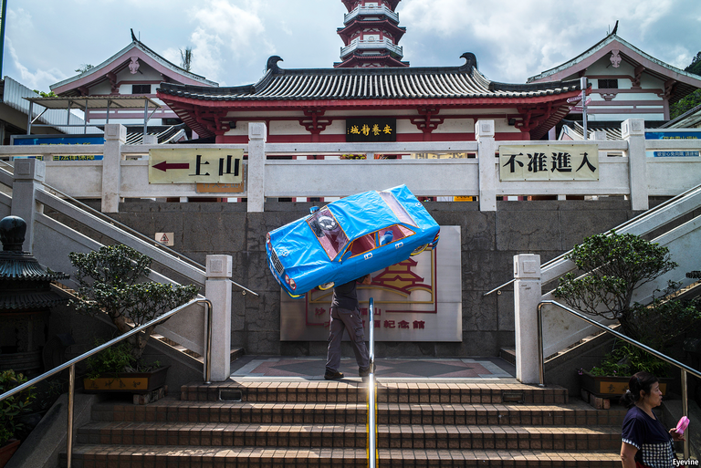
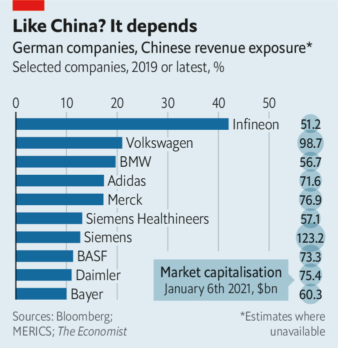
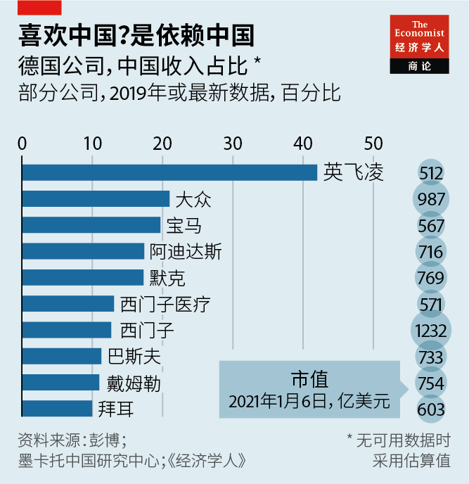

2021-01-19T15:10:37+00:00
Deutschland AG in China
德企在中国
德企在中國
Riding high
高歌猛进
高歌猛進
German companies will keep pouring billions into China, never mind geopolitics
德国企业仍将大手笔投资中国——地缘政治的问题先放放
德國企業仍將大手筆投資中國——地緣政治的問題先放放

THE IDEA of “political change through trade” has lost its appeal across much of the West as China has grown more, not less, authoritarian under President Xi Jinping. That has not stopped Karl Haeusgen, chairman of Hawe, a maker of hydraulic pumps, from believing in the long-term success of its German version, Wandel durch Handel.
随着中国在习近平治下威权程度不降反升，“以贸易改变政治”的理念对大部分西方世界来说已变得索然无味。然而，液压泵制造商哈威（Hawe）的董事长卡尔·豪斯根（Karl Haeusgen）依然相信德国版的“以商促变”可以取得长远的成功。
隨着中國在習近平治下威權程度不降反升，“以貿易改變政治”的理念對大部分西方世界來說已變得索然無味。然而，液壓泵製造商哈威（Hawe）的董事長卡爾·豪斯根（Karl Haeusgen）依然相信德國版的“以商促變”可以取得長遠的成功。
Mr Haeusgen has a self-interested reason for optimism. China accounts for about one-quarter of Hawe’s sales. This will grow substantially once a 25,000-square-metre factory in Wuxi near Shanghai is finished. On January 1st Ye Jiang, an engineer who has worked for the family firm since 1999, joined its management board as its first Chinese member.
豪斯根的乐观态度包含私心。中国市场约占哈威销售额的四分之一。等到公司在无锡建设的一座2.5万平方米的工厂完工后，这一比例还将大幅提升。工程师叶江自1999年起一直为该家族企业效力，今年1月1日他加入了公司董事会，成为其中的第一个中国人。
豪斯根的樂觀態度包含私心。中國市場約佔哈威銷售額的四分之一。等到公司在無錫建設的一座2.5萬平方米的工廠完工後，這一比例還將大幅提升。工程師葉江自1999年起一直為該家族企業效力，今年1月1日他加入了公司董事會，成為其中的第一個中國人。
Many German bosses are in a similar situation. Goods trade between the EU and China grew eight-fold between 2000 and 2019, to €560bn ($626bn). In 2019 Germany accounted for 37% of that, or €206bn. In the first seven months of 2020 German business helped China edge out America as the EU’s largest trading partner. Between January and September China’s share of German exports rose by one-eighth, year on year, to nearly 8%. China is also Germany’s top supplier; its share of German imports rose to more than 11% in the same period, from less than 10% in 2019.
许多德国老板的处境类似。2000年至2019年，欧盟与中国之间的货物贸易增长了七倍，达到5600亿欧元（6260亿美元）。2019年的中欧贸易额中，中德贸易为2060亿欧元，占37%。2020年的头七个月，德国商业助推中国取代美国成为欧盟最大的贸易伙伴。1月至9月，中国占德国出口的比例同比增长了八分之一，接近8%。同时，中国也是德国最大的供应国；同期内，中国占德国进口的份额从2019年的不到10%上升至超过11%。
許多德國老闆的處境類似。2000年至2019年，歐盟與中國之間的貨物貿易增長了七倍，達到5600億歐元（6260億美元）。2019年的中歐貿易額中，中德貿易為2060億歐元，佔37%。2020年的頭七個月，德國商業助推中國取代美國成為歐盟最大的貿易夥伴。1月至9月，中國佔德國出口的比例同比增長了八分之一，接近8%。同時，中國也是德國最大的供應國；同期內，中國佔德國進口的份額從2019年的不到10%上升至超過11%。
Although the most China-dependent American companies, like its casino operators and chipmakers, get more of their revenues from the Asian giant than the most exposed German firms, German Sino-dependency is concentrated in its biggest and most powerful industries (see chart). Of Germany’s 15 most valuable listed firms, ten derive at least a tenth of revenues from China, according to The Economist’s rough estimates; in America, less than half do.
尽管相比最依赖中国的美国公司——例如美国的赌场运营商和芯片制造商——最依赖中国的德国公司从中国赚取的营收占比更低，但德国对这个亚洲巨人的依赖却集中在自身最大最强的一些行业（见图表）。据本刊粗略估计，德国市值最高的15家上市公司中有10家至少有十分之一的收入来自中国，而美国的该比例不到一半。
儘管相比最依賴中國的美國公司——例如美國的賭場運營商和芯片製造商——最依賴中國的德國公司從中國賺取的營收佔比更低，但德國對這個亞洲巨人的依賴卻集中在自身最大最強的一些行業（見圖表）。據本刊粗略估計，德國市值最高的15家上市公司中有10家至少有十分之一的收入來自中國，而美國的該比例不到一半。
That is why German business applauded the hasty conclusion last month, in the last days of Germany’s rotating presidency of the EU Council, of an investment treaty between the bloc and China. The deal is meant to grant European firms better access to the Chinese market by, for instance, removing the requirement that they form a joint venture with a local firm and creating a more level playing field for investors.
这就是为什么德国商界要为上个月达成的中欧投资协定叫好。该协定在德国担任欧盟理事会轮值主席国的最后几天里匆忙达成。它意在为欧洲企业进入中国市场创造更好的条件，例如取消与本地公司组建合资企业的要求，以及为投资者创造更加公平的竞争环境。
這就是為什麼德國商界要為上個月達成的中歐投資協定叫好。該協定在德國擔任歐盟理事會輪值主席國的最後幾天里匆忙達成。它意在為歐洲企業進入中國市場創造更好的條件，例如取消與本地公司組建合資企業的要求，以及為投資者創造更加公平的競爭環境。
Deutschland AG’s peculiar reliance on China also helps explain its reluctance to heed the German government’s pleas to diversify markets and supply chains away from the Asian giant. Indeed, many German firms, from medium-sized Mittelstand stalwarts like Hawe to its bluest chips, are doubling down on the Middle Kingdom. Hahn Automation, which makes industrial robots, plans to invest millions of euros in new Chinese factories and boost its revenues in China from 10% of the total to 25% in the next five years. BASF is building a gargantuan $10bn plastics factory in the southern province of Guangdong, the biggest investment in the chemicals giant’s 155-year history. “We have to play ball with the Chinese,” says Joerg Wuttke, the German head of the EU chamber of commerce in China. “If you are not at the table, you are on the menu,” he warns.
德国商界对中国特有的依赖程度还有助解释它为何不愿响应德国政府的呼吁，在这个亚洲巨人之外多元化发展市场和供应链。事实上，从哈威这样的中小型中坚企业到最大的那些蓝筹公司，许多德国公司正加倍押注于中国。生产工业机器人的哈恩自动化（Hahn Automation）计划在中国投资数百万欧元开设新厂，并在五年内将它在中国的收入占比从10%提高到25%。巴斯夫（BASF）正斥资100亿美元在广东建设一座超大型塑料生产基地，这是该化工巨头155年历史中最大的投资。“我们必须与中国合作。” 中国欧盟商会的德国籍主席伍德克（Joerg Wuttke）表示。“强为刀俎弱为鱼肉啊。” 他警告说。
德國商界對中國特有的依賴程度還有助解釋它為何不願響應德國政府的呼籲，在這個亞洲巨人之外多元化發展市場和供應鏈。事實上，從哈威這樣的中小型中堅企業到最大的那些藍籌公司，許多德國公司正加倍押注於中國。生產工業機器人的哈恩自動化（Hahn Automation）計劃在中國投資數百萬歐元開設新廠，並在五年內將它在中國的收入佔比從10%提高到25%。巴斯夫（BASF）正斥資100億美元在廣東建設一座超大型塑料生產基地，這是該化工巨頭155年歷史中最大的投資。“我們必須與中國合作。” 中國歐盟商會的德國籍主席伍德克（Joerg Wuttke）表示。“強為刀俎弱為魚肉啊。” 他警告說。
The loudest cheerleaders are in Germany’s car industry. “China is the present and the future of German carmakers,” says Noah Barkin of Rhodium Group, a research firm. As the world’s biggest market, China accounts for two in five cars the Volkswagen Group sells globally. Without China it would have been hit harder both by the “Dieselgate” emissions scandal and by the pandemic. China is the biggest foreign market for BMW, a Bavarian rival, whose sales there rose by 31% in the third quarter, year on year. In December Ola Källenius, boss of Daimler (in which two Chinese carmakers hold a combined 15% stake) hailed a “remarkable” recovery in China, the largest and most lucrative market for its Mercedes-Benz brand, whose sales grew by double digits for six straight months.
德国汽车业对此反应最为积极。研究公司荣鼎咨询（Rhodium Group）的诺亚·巴金（Noah Barkin）称，“中国是德国汽车制造商的现在和未来。”作为全球最大的汽车市场，中国占了大众集团全球销量的五分之二；如果没有中国，“排放门”丑闻和疫情对这家公司的打击会更加沉重。中国是大众来自巴伐利亚的竞争对手宝马最大的海外市场，其第三季度在华销量同比增长了31%。12月，戴姆勒（两家中国汽车制造商合计持有该公司15%的股份）的老板康林松（Ola Källenius ）称赞了中国经济的“非凡”复苏。中国是该集团旗下梅赛德斯-奔驰品牌最大也是利润最高的市场，其销量已经连续六个月录得双位数增长。
德國汽車業對此反應最為積極。研究公司榮鼎諮詢（Rhodium Group）的諾亞·巴金（Noah Barkin）稱，“中國是德國汽車製造商的現在和未來。”作為全球最大的汽車市場，中國佔了大眾集團全球銷量的五分之二；如果沒有中國，“排放門”醜聞和疫情對這家公司的打擊會更加沉重。中國是大眾來自巴伐利亞的競爭對手寶馬最大的海外市場，其第三季度在華銷量同比增長了31%。12月，戴姆勒（兩家中國汽車製造商合計持有該公司15%的股份）的老闆康林松（Ola Källenius ）稱讚了中國經濟的“非凡”復蘇。中國是該集團旗下梅賽德斯-奔馳品牌最大也是利潤最高的市場，其銷量已經連續六個月錄得雙位數增長。
German carmakers are also becoming more reliant on China for their capacity to innovate, notes the Mercator Institute for China Studies, a think-tank. In September the new iX3 electric car rolled off the production line in Shenyang, where it was also wholly developed by BMW and its Chinese state-run partner, Brilliance Auto. The joint venture also opened a new battery factory in the northeastern city. Volkswagen and its Chinese partners pledged to invest €15bn into e-mobility in China by 2024. VW recently bought a stake in Gotion High-Tech, a maker of batteries, to bolster its “electrification strategy in China”. Daimler’s latest annual report calls China “a significant market for new technologies”.
智库墨卡托中国研究中心（Mercator Institute for China Studies）指出，德国汽车制造商也越来越依赖中国的创新能力。去年9月，新款iX3电动汽车在沈阳工厂下线。这款汽车完全由宝马及其中国国有合作伙伴华晨汽车联合开发。该合资企业还在沈阳开设了一家新的电池工厂。大众汽车及其中国合作伙伴承诺在2024年前在中国电动汽车领域投资150亿欧元。大众最近入股了电池制造商国轩高科，以支持自己“在中国的电气化战略”。戴姆勒在最新年报中称中国是“新技术的重要市场”。
智庫墨卡托中國研究中心（Mercator Institute for China Studies）指出，德國汽車製造商也越來越依賴中國的創新能力。去年9月，新款iX3電動汽車在瀋陽工廠下線。這款汽車完全由寶馬及其中國國有合作夥伴華晨汽車聯合開發。該合資企業還在瀋陽開設了一家新的電池工廠。大眾汽車及其中國合作夥伴承諾在2024年前在中國電動汽車領域投資150億歐元。大眾最近入股了電池製造商國軒高科，以支持自己“在中國的電氣化戰略”。戴姆勒在最新年報中稱中國是“新技術的重要市場”。
No wonder carmakers are genuflecting before China’s Communist Party. According to the Süddeutsche Zeitung, a newspaper, in 2012 Volkswagen opened a loss-making plant in the western city of Urumqi, in exchange for permits for new, lucrative factories on the eastern coast. VW denies the accusation. It has kept its Urumqi plant running, despite pressure from activists and politicians in America and Europe to stop doing business in Xinjiang province, where the authorities have been persecuting the Uyghur Muslim minority.
难怪汽车制造商会在中国共产党面前俯首称臣。据《南德意志报》（Süddeutsche Zeitung）报道，2012年大众在西部城市乌鲁木齐开设了一家亏损的工厂，以换取许可在东部沿海新建利润丰厚的工厂。大众否认了这一指控。尽管面对欧美的活动分子和政界人士要求停止在新疆（政府在迫害当地的维吾尔族穆斯林少数民族）的业务的压力，该公司仍维持着乌鲁木齐工厂的运营。
難怪汽車製造商會在中國共產黨面前俯首稱臣。據《南德意志報》（Süddeutsche Zeitung）報道，2012年大眾在西部城市烏魯木齊開設了一家虧損的工廠，以換取許可在東部沿海新建利潤豐厚的工廠。大眾否認了這一指控。儘管面對歐美的活動分子和政界人士要求停止在新疆（政府在迫害當地的維吾爾族穆斯林少數民族）的業務的壓力，該公司仍維持着烏魯木齊工廠的運營。
Some voices in corporate Germany are worried that this is short-sighted. Two years ago the BDI, one of the two main German industry associations, published a paper outlining its concerns about high barriers to entry, state subsidies to local firms and other distortions in the Chinese market. Although it now praises the new investment treaty, the BDI warned that its members should be under no illusion: even once the pact is ratified by the European Parliament and implemented, German firms will not have truly free access to the Chinese market.
德国商界也有人担心这是一种短视的做法。两年前，德国两大行业协会之一的德国工业联合会（以下简称BDI）发表文章，列举了中国市场存在的种种问题，包括高准入门槛、政府对本国企业的补贴，以及其他扭曲行为。尽管BDI现在对新的投资协定表示赞赏，但也警告其成员不要抱有幻想：即使该协定获得欧洲议会批准并实施，德国企业也无法真正自由地进入中国市场。
德國商界也有人擔心這是一種短視的做法。兩年前，德國兩大行業協會之一的德國工業聯合會（以下簡稱BDI）發表文章，列舉了中國市場存在的種種問題，包括高准入門檻、政府對本國企業的補貼，以及其他扭曲行為。儘管BDI現在對新的投資協定表示讚賞，但也警告其成員不要抱有幻想：即使該協定獲得歐洲議會批准並實施，德國企業也無法真正自由地進入中國市場。
Chinese firms are also increasingly competing with German ones, particularly in the sort of specialist machinery manufactured in the Mittelstand. China is already the world’s second-biggest exporter of such kit. With high labour costs at home, “innovation is our only competitive advantage”, says Ulrich Ackermann of the VDMA, an association of machinery-makers. And that advantage is being eroded as more Chinese firms follow its electric-car industry in becoming more sophisticated.
中国企业也日益向德国企业发起竞争挑战，尤其在德国中小企业擅长的专业机械制造领域。中国已经是此类机械的世界第二大出口国。德国机械设备制造业联合会（VDMA）的乌尔里希·阿克曼（Ulrich Ackermann）表示，由于德国劳动力成本高昂，“创新是我们唯一的竞争优势”。而随着电动汽车工业带动越来越多的中国公司变得更加先进，这种优势正在被侵蚀。
中國企業也日益向德國企業發起競爭挑戰，尤其在德國中小企業擅長的專業機械製造領域。中國已經是此類機械的世界第二大出口國。德國機械設備製造業聯合會（VDMA）的烏爾里希·阿克曼（Ulrich Ackermann）表示，由於德國勞動力成本高昂，“創新是我們唯一的競爭優勢”。而隨着電動汽車工業帶動越來越多的中國公司變得更加先進，這種優勢正在被侵蝕。
German firms’ relationship with China has therefore become “a constant walk on a tightrope between systemic competition and business partnerships”, says Friedolin Strack of the BDI. No one believes in “political change through trade” in the foreseeable future, admits Wolfgang Niedermark, who until last year headed the German chamber of commerce in Hong Kong. But, it seems, German bosses still believe in trade, through all the political change.■
因此，德国企业与中国的关系已变得像“在系统性竞争和商业伙伴关系之间来回走钢丝”，BDI的福里多林·施特拉克（Friedolin Strack）认为。在可预见的未来，没有人相信“以贸易改变政治”可以奏效，去年离任香港德国商会主席的宁马克（Wolfgang Niedermark）承认。但是，无论政治如何变迁，德国老板们似乎对贸易仍然笃信不移。
因此，德國企業與中國的關係已變得像“在系統性競爭和商業夥伴關係之間來回走鋼絲”，BDI的福里多林·施特拉克（Friedolin Strack）認為。在可預見的未來，沒有人相信“以貿易改變政治”可以奏效，去年離任香港德國商會主席的寧馬克（Wolfgang Niedermark）承認。但是，無論政治如何變遷，德國老闆們似乎對貿易仍然篤信不移。